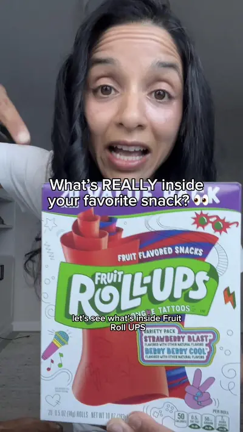

Ever turn over a snack label and wonder what you’re actually eating?

Ingredients
- apples
- pears
- strawberries
- carrot
- corn
Steps
- Let's see what's inside Fruit Roll-Up.
- It starts with corn syrup and sugar, pear puree, maltodex, palm oil, citric acid, sodium citrate, mono-glycerides, an emulsifier and stabilizer, fruit pectin, malic acid, vitamin C, and artificial colors.
- Just like Fruit Roll-Ups, but are so much better for you.
From the video's narration and on-screen text, by @pickyeaterblog on TikTok. Open original